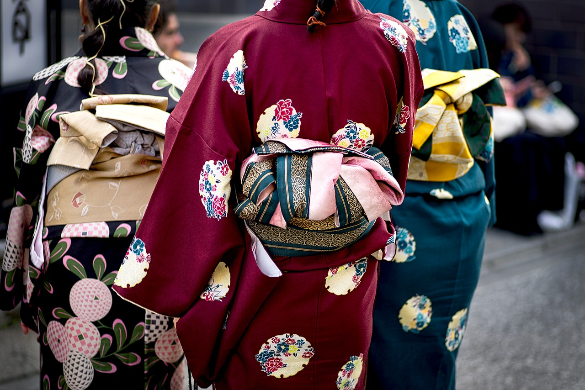
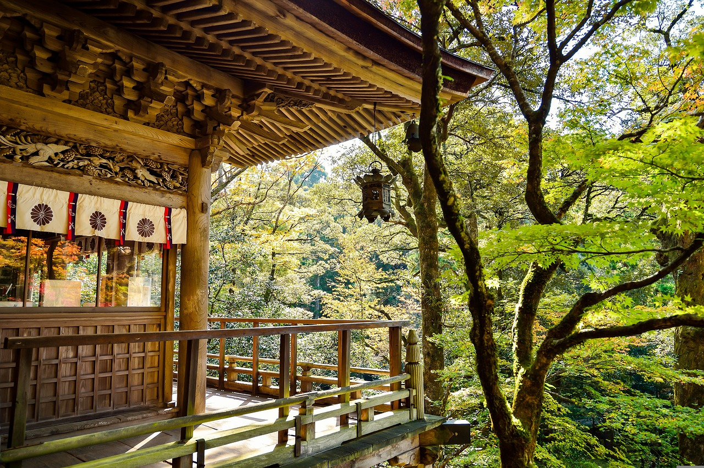
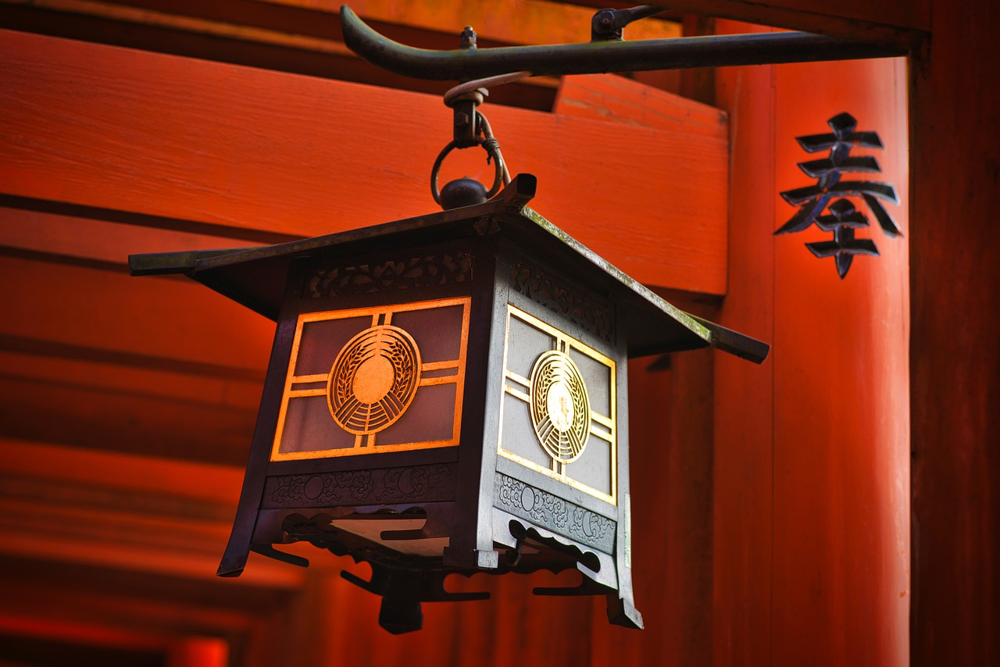

La gastronomía japonesa es una de las más reconocidas a nivel mundial. La variedad de platos y
la calidad de los ingredientes hacen que sea un destino ideal para los amantes de la comida.
Cultura
La cultura japonesa es una de las más ricas y variadas del mundo. La mezcla de tradiciones y
costumbres de los diferentes grupos étnicos que han habitado el país hace que sea un destino
único.
¿Qué te ofrecemos?
🧭 Rutas con alternativas
Te ofrecemos rutas con alternativas para que puedas elegir la que más te guste y acorde a tu
tiempo de estancia.
El barrio de Akibahara es el lugar perfecto para los amantes de la cultura pop y el manga.

Kimonos
Los kimonos son una de las prendas más típicas de Japón y son muy fáciles de encontrar.

Naturaleza
Japón es un país muy verde y con una gran variedad de paisajes.

Templos
Los templos son uno de los lugares más emblemáticos de Japón y no puedes perderte ninguno.
Sushi
El sushi es uno de los platos más típicos de Japón, debes probar su auténtico sabor.
¿Quiéres más información? Escríbenos
Resumen de un viaje a Japón
Flipar con sus templos
La religión y la tradición en un país tan avanzado como Japón todavía son aspectos muy
importantes de la sociedad. Eso hace que los templos, en su mayoría sintoístas y budistas,
formen parte de la cotidianidad de su gente. Posiblemente en Kioto como capital histórica, sea
donde se concentren algunos de los mejores templos del país, pero no es el único sitio: Tokio, Nikko,
Nara o Miyajima cuentan con santuarios igual de impresionantes.
Los mejores templos de Japón
Estos, a nuestro parecer, son los mejores templos de Japón:
Kinkakuji (Kioto), el templo de de oro, un pabellón de 3 plantas enteramente
cubiertas de papel de oro. El contraste con la naturaleza que lo rodea es brutal.
Kyomizu-dera (Kioto), su estructura de madera es majestuosa, y las vistas de Kioto
desde su posición no menos impresionantes. Verás tres fuentes que dicen que traen diferentes
beneficios para el que bebe de su agua: salud, éxito profesional y amor. ¿Cuál necesitas
más?
Fushimi Inari-taisha (Kioto), si has visto «Memoria de una Geisha» lo reconocerás
fácilmente por su casi interminable fila de toris (arcos rojos) que serpentean por la ladera
de esta montaña sagrada. Es uno de los santuarios más bonitos del mundo entero, no dejes de
visitarlo.
Senso-ji (Tokio), es nuestro templo favorito de Tokio, localizado en pleno corazón
del antiguo barrio de Asakusa. Durante el día está lleno de vida gracias al mercadillo
artesanal que hay delante de su entrada, pero de noche reina la calma absoluta, lo mejor es
visitarlo en ambos momentos. No te pierdas la pagoda de 5 pisos, una de las más altas de
Japón.
Santuario de Tosho-gu (Nikko), rodeado de naturaleza, este santuario está dedicado
nada más y nada menos que a Tokugawa Ieyasu, el shogun más grande que tuvo Japón.
Todai-ji (Nara), tiene una peculiaridad en forma de record: es la estructura de
madera más grande del mundo (y eso que tras sufrir unos incendios, es más pequeño que el
original). Imperdible su estatua del Buda Gigante.
Itsukushima Shinto (Miyajima), seguro que has visto en más de una ocasión su imagen:
la de un gran tori rojo que, cuando sube la marea, queda cubierto por el mar.
2. Dormir en un Shukubo, algo que hacer en Japón y que te encantará
Cuando comenzamos a planear nuestro viaje de dos meses por Japón nunca habíamos escuchado hablar
de Koyasan. Por suerte (y algo de casualidad) nos topamos con este nombre tan místico que
representa, nada más y nada menos, que una de las ciudades más sagradas de todo Japón.
Lo recomendable aquí es pasar una noche en un monasterio budista (shukubo), compartiendo el día
a día de los monjes, acudiendo a su oración matinal, probando su comida, dándote un baño en su
sento y conociendo más sobre sus tradiciones. Vamos, sin duda es una de las mejores cosas que
hacer en Japón en tu primer viaje 🙂
Koyasan
Además, Koyasan ofrece varios santuarios importantes, pero sobre todo tienes que darte una
vuelta por el Okunoin, un cementerio súper peculiar donde descansan más de 200.000 almas. El
sitio es de aquellos que impresionan y al mismo tiempo regalan paz y tranquilidad. Al final del
sendero de unos 2 km se llega a la tumba de Kobo Daishi, el monje que fundó KoyaSan y el
“budismo shingon”.
3. Disfrutar de la gastronomía, algo delicioso que hacer en Japón
¿Qué decir de la gastronomía japonesa? Ya sabrás que es una de las más sanas, completas y
sabrosas del mundo. Si, como nosotros, disfrutas de la cocina local, en Japón habrás encontrado
un pequeño paraíso. Así que en tu primera viaje al país del sol naciente aprovecha para probar
muchos platos diferentes: hay vida (y mucha) más allá del sushi.
Clase de cocina japonesa
Pero si quieres vivir una experiencia aún más auténtica ¿por qué no conocer la gastronomía
japonesa desde dentro? Hay webs donde apuntarte a una comida o cena en casa de anfitriones
japoneses (desde 3.000¥, unos 22€), o bien participar en clases de cocina en la propia casa del
anfitrión (desde 6.000¥, unos 45€).
Te aseguramos que experimentarás una velada memorable ya que, no solo aprenderás más sobre la
cocina japonesa auténtica, sino que de paso te llevarás unos amigos. Además el precio está muy
bien considerando que, si sales a cenar varias portadas en un restaurante mediano, gastarás lo
mismo o más 🙂
4. Pisar al menos un castillo medieval
Cuando compramos los billetes para Japón estábamos en Nueva Zelanda y recuerdo que, en los
tiempos muertos que teníamos viajando en furgoneta, nos empapábamos con libros y podcasts sobre
samuráis, castillos y shogunes.
(Mejor si el de Himeji o el de Matsumoto)
Unos meses más tarde nos encontramos cara a cara con el Castillo de Himeji y nos sentimos como
los protagonistas de aquellas historias remotas. Y cuando lo recorrimos por dentro pudimos
revivir las tramas que aquí ocurrieron durante la Edad Media (claro que, los móviles que nunca
faltan en cada escena japonesa nos devolvieron pronto a la realidad).
Otros castillos que merecen mucho la pena son el de Osaka, una ciudad que nos pareció muy
agradable, contrariamente a lo que habíamos leído, no nos hubiese importado quedarnos más días y
por supuesto el Castillo de Matsumoto, llamado también «del cuervo negro».
5. Sentirte en el futuro, algo que te pasará en Japón
Una de las mejores cosas de Japón es su carácter atemporal: puedes pasar de la Edad Media de los
castillos de Himeji y Osaka a Tokio, la ciudad más futurista del mundo. Sí, en Japón existen los
viajes en el tiempo.
Si quieres sentirte como una hormiguita entre los rascacielos, marearte rodeado de luces de neón
y disfrutar como un enano entre tiendas de comics y cosplay, hay dos barrios que no puedes
perderte: Shinjuku y Akihabara. No te extrañe toparte con restaurantes de robots o con chicas de
ojos rosa y pelo verde. ¡En Tokio todo es posible!
¿Y qué decir de sus trenes? Subir a un tren bala es toda una experiencia, eso sí… no te olvides
de comprar con adelanto tu JR Pass.